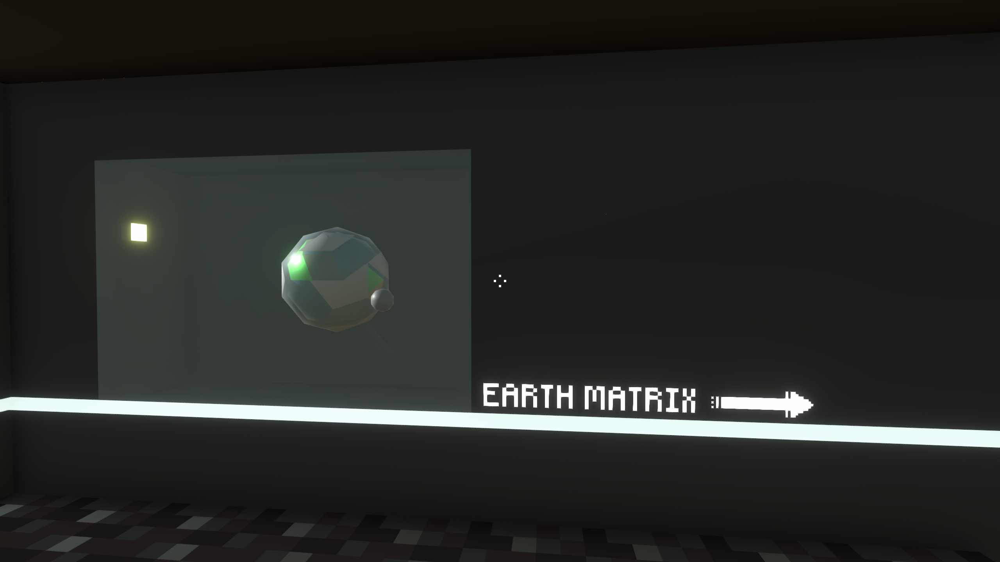

<--Mainhall
Cities and human life
exhibits
 -Streetscape 2180-
-Streetscape 2180-
Archaeologists have restored as much as they can after repairing ancient information storage devices to create a street view of a city on Earth in the year 2180.
This was the last year before the United Nations of Solar System (UNSS) (1945-2188) publicly recognized FLASH, which historians have called "the ensuing quiet".
 -Manpower Individual Acceleration Prototype-
-Manpower Individual Acceleration Prototype-
Archaeologists have found that this tool was popular between 1800-2100. It was a simple one-man mobile consisting of a triangular frame and two circular drives. The energy to drive it was entirely dependent on the user's own strength.
Historical sociologists believe that the popularity of this tool is related to the historical term "environmentalism" (environmental protectionism).
tips: this tool developed corresponding sporting competitions

<--Mainhall
The largest and most detailed museum of Earth history on Nivarus XII